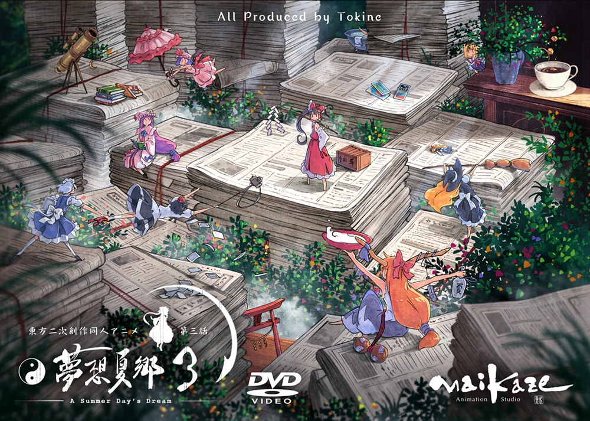

所以这就是人生自建站的第一篇博客EX
BGM: ツキアカリのミチシルベ (月光的指引)
梦想夏乡镇贴：
从7号晚上近12点洗完澡突然有了这样的想法，到8号凌晨5点多建完这个Blog，其中经历了码文字，敲代码，找图片，改图片，找视频，剪视频，以及查找html和css的各种语法，心情却愈发地爽快。奈何身体承受不了，只好暂且罢手去睡。
嘛，又一次切身领悟到只要去做，还是能做得到的。最缺乏的也许就是行动力了。
还记得在知乎上看到过有人转述的一段话：采访者问被采访者为什么不为自己喜欢的声优办一场 Party, 被采访者表示从未有过如此想法。在大多数人眼里，名声优都像是另一个世界的人。但其实名声优也只是普通人。有人为他们办 Party 他们会很开心。也许有人又会说，请名声优一定要价不菲。但这些人其实根本没尝试去了解过。实际上请声优的价格并不是特别高。省下买手办买周边的钱，大概六万日元的价码就可以为声优主办一场活动。（出处： 为什么《梦想夏乡》这样一部同人作品会有这么强大的声优阵容？）
感触颇深。很多时候我们不是做不到，只是没有去尝试罢了。也许天才与凡人的区别，也不过如此。
话又说回来，虽然我觉得自己好像干了件大事，不过，并不是自己觉得做了很多，或者很了不起，别人就会认同你。一方面自己的兴趣其实无需别人认同，另一方面别人也许不懂你经历了什么。再就是其实你所做的不见得真的就很不得了。毕竟永无止境，人外有人，直到死亡的那一天，人生的旅途都不会有终点。
By Donny
書於2016年10月09日中午
- • GitHub: Donny-Hikari
- • GitBlogs: Donny's Blogs
- • Mail: donny.hikari@gmail.com
- • LOFTER: Donny